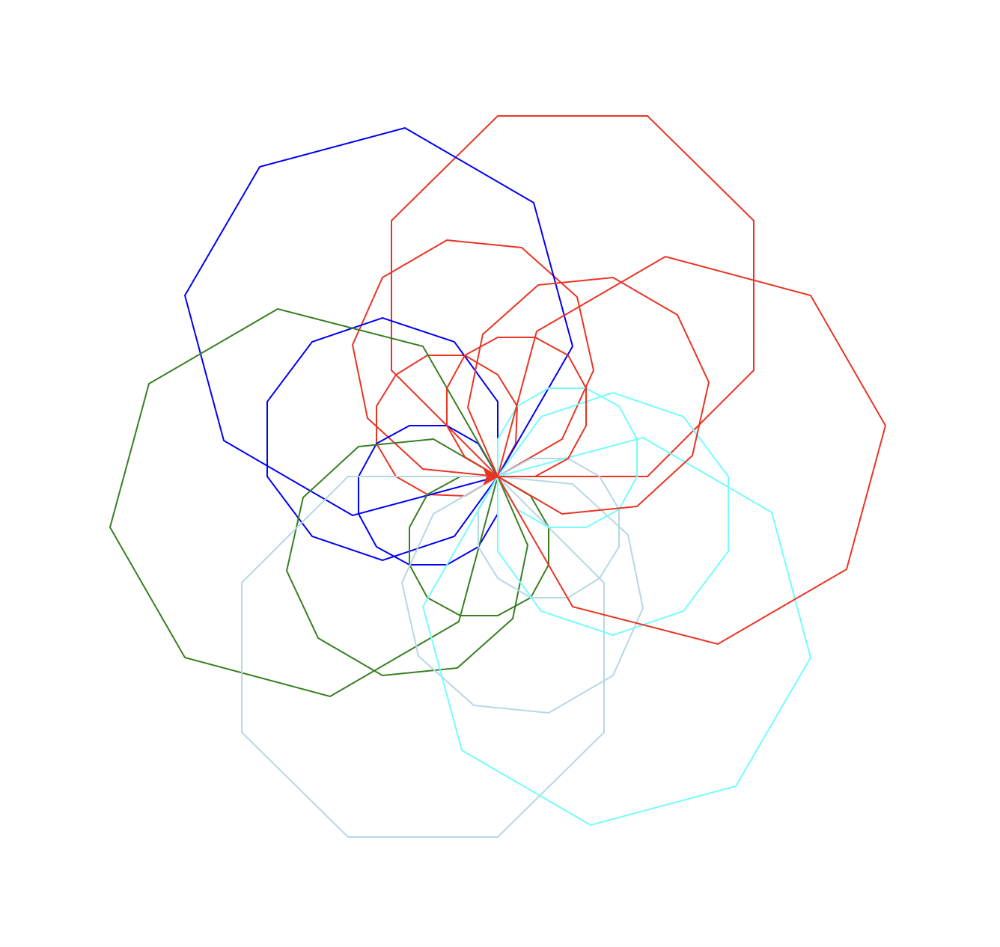

Project Overview
The Turtle Mandala Design project is an interactive Python application built with the turtle module. It creates intricate mandala-style patterns using geometry, loops, and color, demonstrating creative programming and visual design skills.
Description
This project showcases my understanding of Python programming fundamentals and creative problem-solving. Using the turtle graphics library, I created visual representations of complex patterns and designs that would otherwise be difficult to imagine.
The project involves:
- Creating reusable functions for drawing geometric shapes
- Using loops to generate repetitive patterns
- Implementing color gradients and visual effects
- Combining multiple drawings to create complex compositions
- Optimizing code for clarity and efficiency
Technical Details
Technologies Used
- Python 3.x - Primary programming language
- Turtle Module - Graphics library for drawing
- Mathematical Concepts - Geometry and trigonometry for precise drawings
Key Features
- Interactive drawing capabilities
- Custom color palettes and gradients
- Procedurally generated patterns
- User-friendly interface
- Scalable and modular code structure
Learning Outcomes
Through this project, I developed skills in:
- Python programming and syntax
- Computational thinking and algorithm design
- Graphics and visual design principles
- Code organization and best practices
- Debugging and problem-solving techniques
Mandala Artwork

This image highlights the final mandala design created through the turtle graphics project.